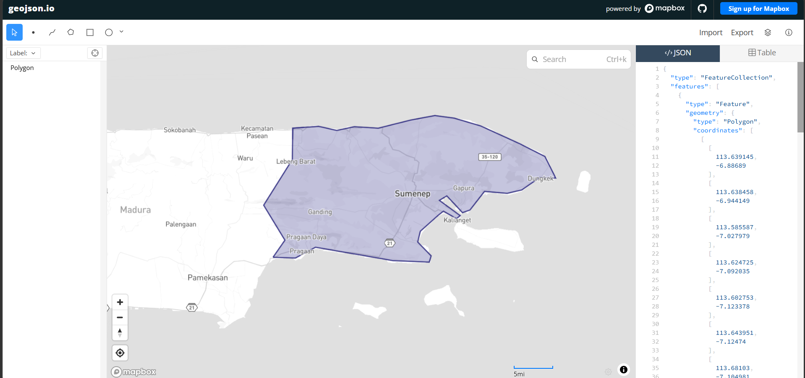

Peramalan Kadar Nitrogen Dioksida (NO₂) di Kabupaten Sumenep Madura Menggunakan K-Nearest Neighbor Regression Berdasarkan Data Sentinel-5P Copernicus#
1. Pendahuluan#
1.1 Latar Belakang#
Peningkatan aktivitas transportasi, pertumbuhan penduduk, serta berbagai aktivitas manusia dapat menyebabkan meningkatnya pencemaran udara. Salah satu polutan udara yang menjadi perhatian adalah Nitrogen Dioksida (NO₂). Gas ini umumnya berasal dari proses pembakaran bahan bakar fosil seperti kendaraan bermotor, industri, dan pembangkit energi.
Konsentrasi NO₂ yang tinggi dapat menimbulkan dampak negatif terhadap kesehatan manusia, seperti gangguan sistem pernapasan, iritasi paru-paru, memperburuk penyakit asma, serta menyebabkan penurunan kualitas lingkungan. Oleh karena itu, pemantauan dan peramalan kadar NO₂ menjadi penting untuk mendukung pengambilan keputusan dalam pengelolaan kualitas udara.
Pada penelitian ini dilakukan peramalan kadar NO₂ harian di Kabupaten Sumenep Madura menggunakan data satelit Sentinel-5P yang diperoleh melalui Copernicus Data Space Ecosystem. Metode yang digunakan adalah K-Nearest Neighbor (KNN) Regression dengan pendekatan time series.
2. Tujuan Penelitian#
Tujuan penelitian ini adalah:
Mengumpulkan data harian kadar NO₂ di Kabupaten Sumenep menggunakan Sentinel-5P. Melakukan preprocessing data untuk mengatasi missing value dan outlier. Membangun model KNN Regression untuk melakukan peramalan kadar NO₂. Mengevaluasi performa model menggunakan RMSE, R² Score, dan MAPE.
3. Pengumpulan Data#
3.1 Sumber Data#
Data diperoleh dari:
Copernicus Data Space Ecosystem Sentinel-5P Level 2 Band NO₂
3.2 Area of Interest (AOI)#

Wilayah penelitian berada pada Kabupaten Sumenep Madura dengan koordinat GeoJSON sebagai berikut:
{
"type": "Polygon",
"coordinates": [[
[113.639145, -6.88689],
[113.638458, -6.944149],
[113.585587, -7.027979],
[113.624725, -7.092035],
[113.602753, -7.123378],
[113.643951, -7.12474],
[113.68103, -7.104981],
[113.823853, -7.12951],
[113.890457, -7.132235],
[113.89389, -7.120652],
[113.869171, -7.095442],
[113.873978, -7.075681],
[113.906937, -7.046379],
[113.91655, -7.038883],
[113.940582, -7.052512],
[113.947449, -7.047061],
[113.908997, -7.01912],
[113.922729, -7.010942],
[113.951569, -7.041609],
[113.965302, -7.036839],
[113.992081, -7.002764],
[114.033966, -7.006171],
[114.060745, -7.000038],
[114.094391, -6.976865],
[114.114304, -6.978228],
[114.12323, -6.978228],
[114.103317, -6.938696],
[114.057312, -6.915521],
[113.985214, -6.8828],
[113.936462, -6.868484],
[113.900757, -6.863712],
[113.856812, -6.871893],
[113.796387, -6.88689],
[113.752441, -6.884164],
[113.720169, -6.890981],
[113.686523, -6.883482],
[113.639145, -6.88689]
]]
}
3.3 Spatial Extent#
spatial_extent = {
"west": 113.585587,
"south": -7.132235,
"east": 114.123230,
"north": -6.863712
}
3.4 Rentang Waktu#
01 Januari 2023 – 31 Desember 2025
4. Pengambilan Data Menggunakan OpenEO#
4.1 Koneksi ke OpenEO#
import openeo
connection = openeo.connect(
"openeo.dataspace.copernicus.eu"
).authenticate_oidc()
4.2 Load Dataset Sentinel-5P#
s5p = connection.load_collection(
"SENTINEL_5P_L2",
temporal_extent=["2023-01-01", "2025-12-31"],
spatial_extent={
"west":113.585587,
"south":-7.132235,
"east":114.123230,
"north":-6.863712
},
bands=["NO2"]
)
4.3 Agregasi Temporal Harian#
s5p_daily = s5p.aggregate_temporal_period(
reducer="mean",
period="day"
)
4.4 Agregasi Spasial
s5p_no2 = s5p_daily.aggregate_spatial(
reducer="mean",
geometries=aoi
)
4.5 Menjalankan Job#
job = s5p_no2.execute_batch(
title="NO2 Sumenep Madura",
outputfile="NO2_Sumenep.nc"
)
5. Preprocessing Data#
5.1 Membaca File NetCDF#
import netCDF4
ds = netCDF4.Dataset("NO2_Sumenep.nc")
no2 = ds.variables["NO2"][:]
time = ds.variables["t"][:]
time_units = ds.variables["t"].units
dates = netCDF4.num2date(
time,
units=time_units
)
5.2 Mengatasi Missing Value#
Metode yang digunakan adalah Interpolasi Linear.
series.interpolate(
method='linear',
limit_direction='both'
)
5.3 Membentuk Data Time Series Harian#
np.mean(no2_filled[i])
5.4 Menyimpan Data ke CSV#
df.to_csv(
"NO2_Sumenep.csv",
index=False
)
5.5 Pengecekan Missing Date#
missing_dates = full_range.difference(
df['date']
)
5.6 Interpolasi Missing Date#
df['NO2'] = df['NO2'].interpolate(
method='time'
)
6. Deteksi Outlier#
6.1 Metode IQR#
Rumus IQR:
Q1 = Kuartil 1 Q3 = Kuartil 3 IQR = Q3 − Q1
Batas bawah:
Lower Bound = Q1 − 1.5 × IQR
Batas atas:
Upper Bound = Q3 + 1.5 × IQR
6.2 Menghapus Outlier#
Outlier diubah menjadi NaN kemudian diisi kembali menggunakan interpolasi linear.
7. Normalisasi Data#
Karena model yang digunakan adalah KNN Regression, maka dilakukan normalisasi menggunakan Min-Max Scaler.
from sklearn.preprocessing import MinMaxScaler
scaler = MinMaxScaler()
df['NO2_scaled'] = scaler.fit_transform(
df[['NO2_clean']]
)
8. Transformasi Time Series Menjadi Supervised Learning#
Lag 4
NO2(t-4), NO2(t-3), NO2(t-2), NO2(t-1) → NO2(t)
Lag 10
NO2(t-10) ... NO2(t-1) → NO2(t)
Lag 30
NO2(t-30) ... NO2(t-1) → NO2(t)
9. KNN Regression#
Pembagian Data Training : 80% Testing : 20% Model
KNeighborsRegressor(
n_neighbors=5
)
10. Evaluasi Model#
Parameter evaluasi yang digunakan:
RMSE
Root Mean Squared Error digunakan untuk mengukur rata-rata kesalahan prediksi.
R² Score
Menunjukkan kemampuan model dalam menjelaskan variasi data.
MAPE
Mean Absolute Percentage Error digunakan untuk mengukur tingkat kesalahan dalam bentuk persentase.
11. Visualisasi#
Visualisasi yang dibuat:
Grafik Deteksi Outlier Grafik Aktual vs Prediksi Lag 4 Grafik Aktual vs Prediksi Lag 10 Grafik Aktual vs Prediksi Lag 30
12. Hasil dan Pembahasan#
Berdasarkan hasil evaluasi model KNN Regression, dilakukan perbandingan performa antara penggunaan lag 4, lag 10, dan lag 30.
Model terbaik dipilih berdasarkan:
RMSE paling kecil R² paling besar MAPE paling kecil
Hasil tersebut digunakan untuk menentukan model yang paling sesuai dalam melakukan peramalan kadar NO₂ harian di Kabupaten Sumenep Madura.
13. Kesimpulan#
Penelitian ini berhasil melakukan pengambilan data NO₂ harian menggunakan Sentinel-5P melalui Copernicus Data Space Ecosystem. Data kemudian diproses melalui tahap preprocessing, deteksi outlier, normalisasi, dan transformasi menjadi supervised learning.
Model KNN Regression digunakan untuk melakukan peramalan kadar NO₂ harian dengan beberapa variasi lag. Evaluasi dilakukan menggunakan RMSE, R² Score, dan MAPE sehingga dapat diketahui konfigurasi model yang memberikan performa terbaik.
14. Daftar Pustaka#
Copernicus Data Space Ecosystem. (2025). Sentinel-5P Atmospheric Monitoring Data.
European Space Agency. Sentinel-5P Mission Overview.
Pedregosa, F., et al. (2011). Scikit-learn: Machine Learning in Python. Journal of Machine Learning Research.
Pandas Development Team. (2025). Pandas Documentation.
NumPy Developers. (2025). NumPy Documentation.